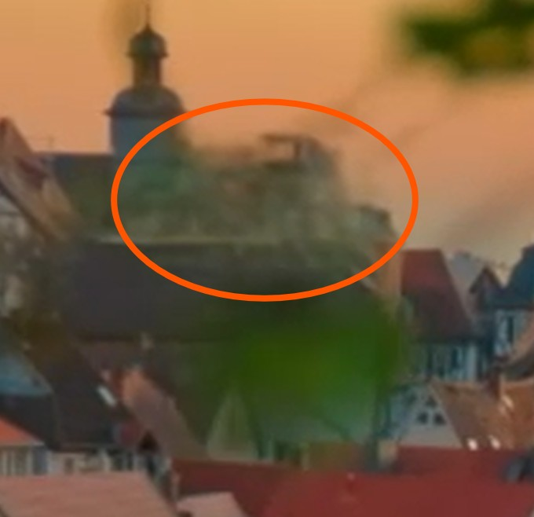
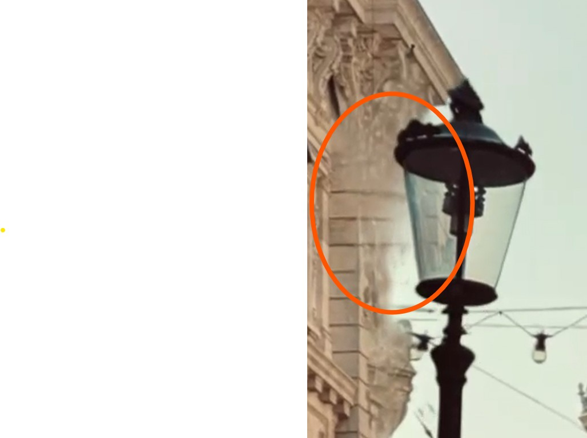

TL;DR: For the final project, I would like to investigate and recreate, to the extent practical, Apple's new "spatial scene" feature, which adds an interactive 3D depth effect to entirely 2D images.
Inspiration
Apple's "spatial scene" feature in iOS 26 (available on iPhone 12 and newer) adds a 3D depth effect to 2D images. It needs no camera metadata and no depth information. Here it is on a couple photos I downloaded from Unsplash:


That is extraordinarily good! Look closely:


What do we know?
I couldn't find any explanation from Apple on how this works. This MacRumors article says Spatial Scenes uses "generative AI that analyzes your photos to identify different elements and create depth maps." My guess is that they're doing two things:
- Generating a depth-map and using it to shift pixels based on some relative perspective change.
-
Identifying discrete "layers" in the depth map and doing some sort of naive generative fill on each,
so that parts occluded in the original image can be "revealed" in the Spatial Scene. If we look more closely, we can see the fill is just good enough
to be superficially convincing:
 
Scope and possible approach
To make sure I have a presentable "product" as early as possible, with flexible scope, I will work "backwards". That is, instead of beginning with a depth-less, metadata-less 2D image and work towards an interactive 3D depth scene, I will begin with an image + depth map pair and have the interactive scene viewer first. Shifting pixels based on depth seems quite doable, and I've already found these two pages which might help.
As for the generative fill, there are two ways I can think of to do this. I believe both require isolating discrete depth layers/regions from the initial continuous pixel depth map.
- Upscale closer layers relative to further ones. With the right limit on perspective change, this will only ever reveal further content "underneath" the closer content which is present in the original image.
- Fill inwards using the pixel values from the cutout border. Perhaps apply some blur or other effects.
At this point I'd have a "Spatial Scene viewer", but with a manually input depth map. The next step would be to find a way to generate such a depth map from a standalone 2D image. I could do either or both of the following:
- Generate a pixel depth map using the best locally doable technique I can find - likely using an AI model.
- Make it really easy to manually create a layer-based depth map by drawing rough bounding boxes around objects and specifying relative distance. Refine selections using segmentation, edge detection, and/or any other techniques I can find. This version would allow purposeful exaggeration and may have artistic potential.